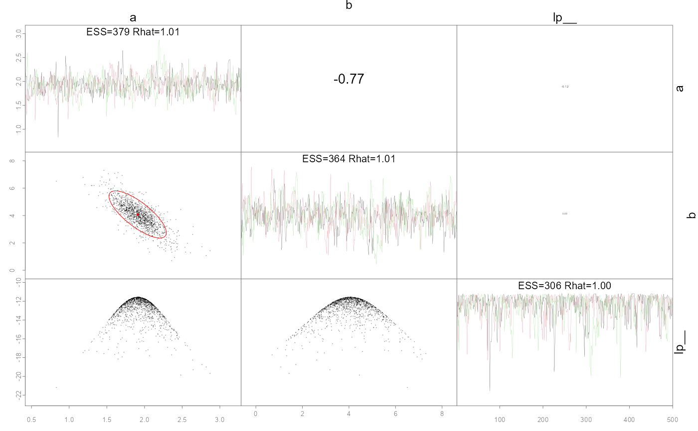
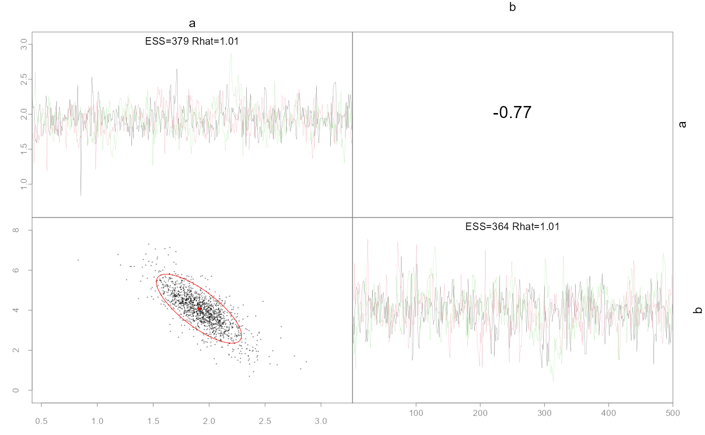
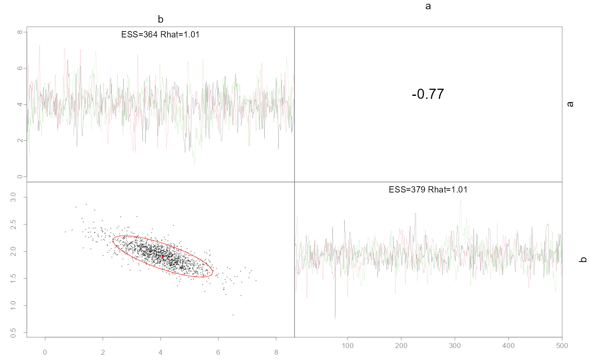
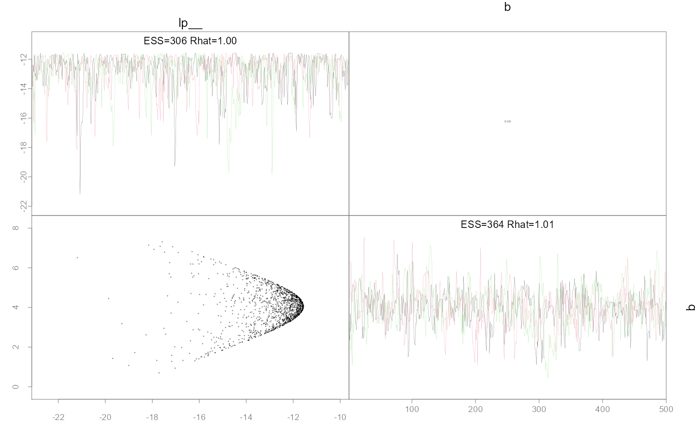

R/pairs_admb.R
pairs_admb.RdPlot pairwise parameter posteriors and optionally the MLE points and confidence ellipses.
pairs_admb( fit, order = NULL, diag = c("trace", "acf", "hist"), acf.ylim = c(-1, 1), ymult = NULL, axis.col = gray(0.5), pars = NULL, label.cex = 0.8, limits = NULL, add.mle = TRUE, add.monitor = TRUE, unbounded = FALSE, ... )
| fit | A list as returned by |
|---|---|
| order | The order to consider the parameters. Options are NULL (default) to use the order declared in the model, or 'slow' and 'fast' which are based on the effective sample sizes ordered by slowest or fastest mixing respectively. See example for usage. |
| diag | What type of plot to include on the diagonal,
options are 'acf' which plots the autocorrelation function
|
| acf.ylim | If using the acf function on the diagonal, specify the y limit. The default is c(-1,1). |
| ymult | A vector of length ncol(posterior) specifying how much room to give when using the hist option for the diagonal. For use if the label is blocking part of the plot. The default is 1.3 for all parameters. |
| axis.col | Color of axes |
| pars | A vector of parameter names or integers representing which parameters to subset. Useful if the model has a larger number of parameters and you just want to show a few key ones. |
| label.cex | Control size of outer and diagonal labels (default 1) |
| limits | A list containing the ranges for each parameter to use in plotting. |
| add.mle | Boolean whether to add 95% confidence ellipses |
| add.monitor | Boolean whether to print effective sample |
| unbounded | Whether to use the bounded or unbounded version of the parameters. size (ESS) and Rhat values on the diagonal. |
| ... | Arguments to be passed to plot call in lower diagonal panels |
Produces a plot, and returns nothing.
This function is modified from the base pairs
code to work specifically with fits from the
'adnuts' package using either the NUTS or RWM MCMC
algorithms. If an invertible Hessian was found (in
fit$mle) then estimated covariances are available to
compare and added automatically (red ellipses). Likewise, a
"monitor" object from rstan::monitor is attached as
fit$monitor and provides effective sample sizes (ESS)
and Rhat values. The ESS are used to potentially order the
parameters via argument order, but also printed on
the diagonal.
Cole Monnahan
pairs_admb(fit, pars=1:2)pairs_admb(fit, pars=1:2, order='slow')pairs_admb(fit, pars=1:2, order='fast')